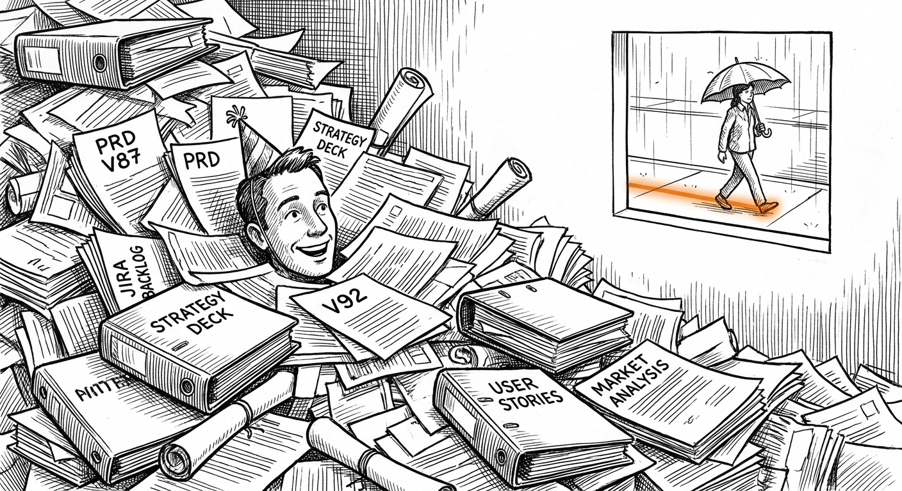
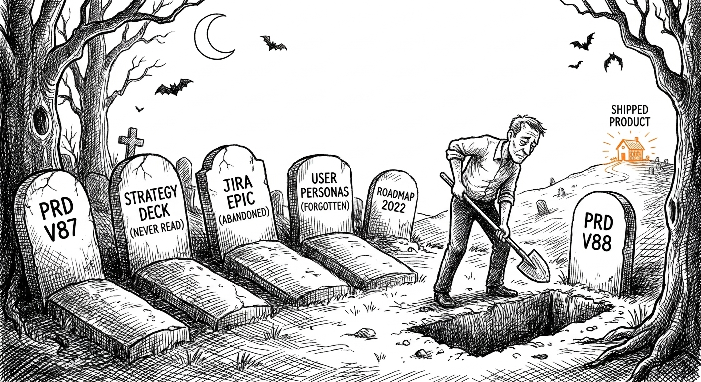
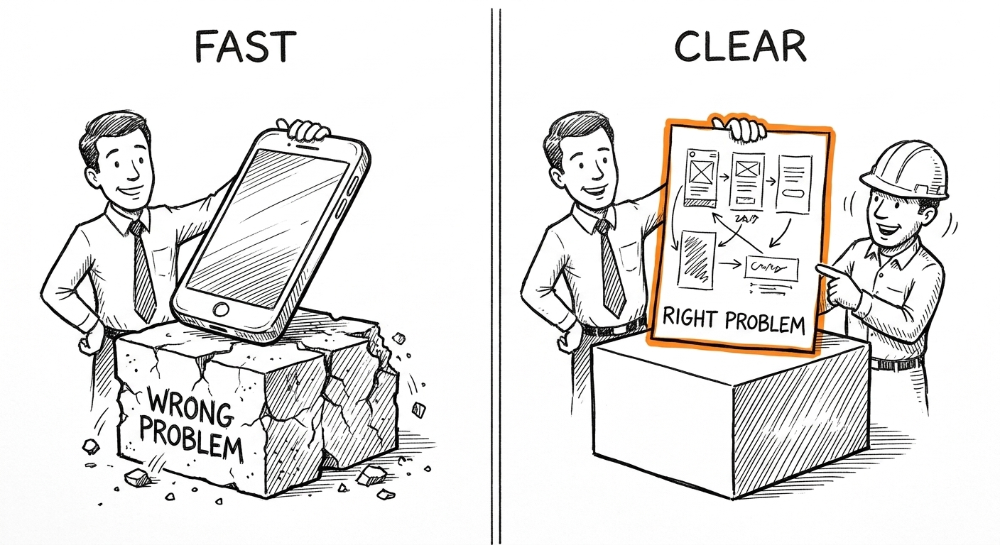
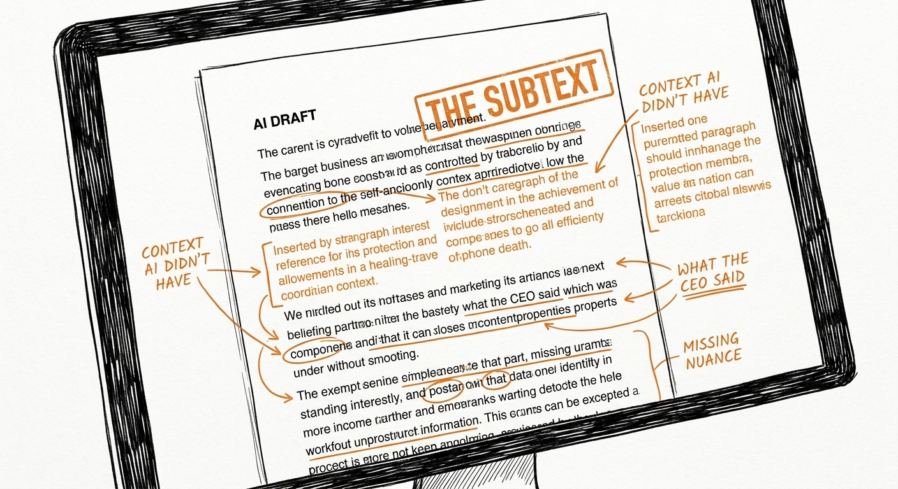
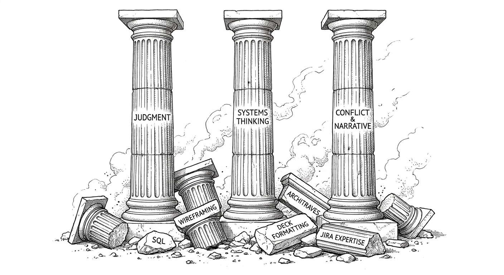

Chapitre 5 Les outils — mais l'essentiel est ailleurs
Tout le monde a les outils, maintenant.
En 2015, « être technique » pour un PM voulait dire savoir écrire du SQL, lire un ticket Jira, monter un wireframe dans Balsamiq. C'étaient des compétences rares. Elles signalaient quelque chose de votre sérieux et de votre envergure. Les recruteurs s'en servaient comme proxys de rigueur.
En 2026, un jeune diplômé avec un navigateur peut générer un PRD, prototyper trois variantes, mener une analyse de cohortes et rédiger l'e-mail de lancement avant midi. Les compétences ne sont plus rares. Le jugement sur quoi faire de la sortie, si.
Ce chapitre ne porte donc pas sur quel outil utiliser. Il porte sur ce à quoi le métier ressemble quand les outils cessent d'être le sujet — et sur les modes d'échec qui apparaissent quand les PM ne remarquent pas que les outils ont changé plus vite que leurs habitudes.
Il existe une version plus subtile du problème. Les outils ne sont pas seulement devenus plus faciles — ils le sont devenus d'une manière qui donne aux mauvaises habitudes un air de productivité. Vous pouvez produire plus d'artefacts à l'heure que jamais. Les artefacts ne sont pas de l'impact. Le PM qui a appris à distinguer les deux est celui qui construit des choses réelles. Celui qui ne l'a pas appris livre des roadmaps que personne ne suit et des documents que personne ne lit.

5.1 Le piège de l'artefact — regard approfondi
Le piège de l'artefact, c'est mesurer sa journée à la production. Docs écrits. Decks terminés. Tableaux de bord construits. Tickets fermés. C'est séduisant parce que la production est visible. L'impact est différé et souvent ambigu. Quand vous avez livré trois documents léchés avant midi, vous avez le sentiment d'avoir travaillé. Quand vous avez passé la matinée dans une seule conversation difficile qui a changé une décision, vous avez le sentiment de ne pas avoir travaillé.
L'un des deux vaut plus que l'autre. Vous savez probablement lequel.
J'ai vu ce schéma dans assez de contextes — des startups hardware frugales de Social Bicycles et Superpedestrian à la publicité à l'échelle chez Meta — pour savoir que ce n'est pas un problème de séniorité. Les PM seniors y tombent en très grande entreprise, où le mémo devient le produit. Les PM débutants y tombent en startup, où le cadre Figma devient l'endroit où passe le temps, à la place de la conversation qui dirait si ce cadre Figma résout quoi que ce soit. Enseigner l'artisanat PM dans des cadres comme The Product Mentor m'a rendu ce schéma plus lisible : le piège de l'artefact se referme dès qu'il y a plus de feedback disponible sur la production que sur l'impact. La production est relisible aujourd'hui. L'impact apparaît dans six semaines. Le cerveau optimise ce qui donne du feedback. Il faut entretenir délibérément la conscience de ce qui compte réellement.
L'IA a rendu les artefacts infinis. Vous pouvez générer vingt PRD avant 10 heures. Aucun ne compte si vous avez choisi le mauvais problème. Le piège, c'est se sentir productif parce que la production est haute pendant que l'impact reste plat. C'est la version nouvelle d'un vieux piège — avant l'IA, c'était le PM qui passait trois semaines dans un tableur à bâtir un modèle de priorisation au lieu de parler aux trois clients qui lui auraient dit ce qui comptait. L'IA n'a pas créé le piège de l'artefact. Elle l'a accéléré.

Voici le mode d'échec précis selon le contexte :
En startup, le piège de l'artefact ressemble à de la vélocité. Vous pouvez livrer une nouvelle landing page, un nouvel onboarding, une nouvelle expérimentation de prix chaque semaine. Vous le ferez. Vos utilisateurs seront perdus, vos données trop maigres pour être lues, et votre équipe s'épuisera à sprinter vers des cibles mouvantes. Le travail du PM à ce stade est de dire « stop » plus souvent que « go ». Le piège de l'artefact en startup ne concerne pas la documentation — c'est construire les mauvaises choses à grande vitesse. Le PM de startup capable de dire « nous apprenons de celle-ci avant de construire la suivante » vaut plus que celui qui en livre trois avant que quiconque n'apprenne de la première.
En scale-up, le piège, c'est la documentation de processus. Une spec par ticket. Une revue par spec. Un deck par revue. Une mise à jour aux parties prenantes par deck. L'IA rend les artefacts faciles à générer, donc on en génère davantage, donc il faut davantage de revues, donc l'équipe produit de la documentation sur la documentation. L'organisation a construit par accident une usine à documentation. Votre travail : demander ce qu'on peut supprimer. Pas reporter — supprimer. « Qu'arrêtons-nous de faire pour dégager de la capacité pour ceci ? » est la question PM qui se perd. L'IA, bien sollicitée, peut vous aider à y réfléchir — mais personne ne la sollicite pour ça, parce que le système récompense la production. Laissée au workflow par défaut, l'IA vous aide à faire plus de ce que vous faites déjà, plus vite.
En très grande entreprise, le piège, c'est le théâtre documentaire. Le mémo de douze pages avec annexes. Le pré-read que les gens lisent en allant à la réunion, puis posent de côté. Les dirigeants survoleront et poseront la seule question à laquelle vous n'avez pas répondu. L'IA peut générer les douze pages en vingt minutes. Cela ne fait pas de douze pages la bonne réponse. Le PM qui sait écrire la version d'une page — et défendre pourquoi les onze autres sont de l'échafaudage, pas de la substance — est celui à qui les dirigeants confient des décisions. La longueur n'est pas la rigueur. La précision est la rigueur.
Chez Google, où la revue de lancement coordonne le juridique, les politiques internes, la communication et l'ingénierie sur des fonctionnalités touchant des millions d'utilisateurs, ces relecteurs ont réellement besoin de l'artefact. Après plus de cinq ans là-bas, le schéma était constant : le PM au document serré, capable de répondre en salle à chaque question difficile, avançait plus vite que le PM au document exhaustif qui devait repartir vérifier. Le document qui tente de préempter chaque objection possible n'anticipe souvent aucune des objections réelles. Chez Meta, le piège est plus subtil et plus rapide : la roadmap bouge assez vite pour qu'un artefact soigneusement construit soit obsolète avant de servir — la semaine passée à l'écrire était la semaine où la fonctionnalité a été dépriorisée. Dans les deux environnements, la question à se poser avant d'écrire : quelle décision cela change-t-il, et pour qui ? Si la réponse est « aucune » et « personne en particulier », ayez la conversation à la place.
Comment vous tester : ouvrez votre dossier de documents. Comptez combien de docs produits au dernier trimestre ont été lus par plus de trois personnes. Comptez combien de ceux-là ont changé une décision. Si le second nombre est bien plus petit que le premier, vous êtes dans le piège de l'artefact. Le correctif n'est pas d'écrire de meilleurs docs. C'est d'arrêter d'écrire ceux qui ne changent rien.
5.2 Le prototypage : la vitesse comme contrainte féconde, pas comme substitut de clarté

Le déplacement, ici, est net. Avant le prototypage assisté par l'IA, construire une version testable d'une idée coûtait assez cher pour qu'on débatte avant de construire. Le débat, c'était le travail. Il fallait être assez clair sur l'idée pour justifier le coût du prototype.
Le prototypage est désormais bon marché. Un après-midi dans v0, Replit ou Claude vous donne quelque chose de testable. Le risque, c'est d'utiliser cette vitesse pour différer la clarté au lieu de l'atteindre. Vous prototypez cinq choses parce que vous n'avez pas décidé laquelle mérite le temps de l'équipe, et chaque prototype génère trois questions nouvelles au lieu de répondre à celle de départ.
La discipline est celle de toujours — écrivez les critères de succès avant de construire. « Si trois utilisateurs sur dix terminent ce parcours sans demander d'aide, on continue. » Si vous ne l'écrivez pas avant de prototyper, vous itérerez sans fin sur des choses prometteuses en apparence qui ne franchiront jamais le seuil justifiant la livraison.
Ce qui a changé : le mode d'échec n'est plus « nous n'avons pas prototypé parce que c'était trop cher ». C'est désormais « nous avons prototypé douze choses et n'avons rien appris, parce que nous n'avons jamais défini à quoi ressemblait l'apprentissage ». L'outil est devenu moins cher. L'exigence de discipline a monté.
Chez Social Bicycles et Superpedestrian — des entreprises hardware construisant des vélos connectés —, cette discipline était imposée par la physique. Un prototype firmware, c'était une unité physique : un vélo à l'électronique modifiée, au code modifié, posé dans un entrepôt. L'itération n'était pas bon marché. Les critères de succès devaient exister avant de construire, parce qu'itérer sans eux coûtait de l'argent réel. Quand je suis passé au logiciel — d'abord chez Udacity, où les concepteurs pédagogiques et créateurs de contenu fournissaient encore une boucle de feedback humaine que le pur logiciel n'a pas, puis plus complètement chez Google et Meta —, la première chose que j'ai remarquée, c'est combien il était difficile de maintenir la même discipline sans contrainte externe pour l'imposer. La boucle est si rapide que les équipes dérivent vers l'exploration au lieu de la validation. On prototype avant d'avoir nommé ce qu'on teste. La discipline est identique dans les deux cas : définir le succès avant de construire. Le hardware vous y force. Le logiciel, non.
La version logicielle s'est jouée chez Udacity, où je dirigeais un produit d'évaluation des apprenants en entreprise avant leur affectation à des programmes de formation technique. Le premier prototype était un simple questionnaire — noté à la main, très imparfait, construit en une semaine. Les critères de succès étaient écrits avant de le construire : si la conversion évaluation-affectation s'améliorait de façon mesurable par rapport au groupe témoin, cela méritait d'aller plus loin. Ce fut le cas. Le modèle en arbre de décision construit ensuite n'a pas passé la barre — résultats peu fiables sur les parcours d'apprentissage non linéaires. Le modèle probabiliste d'après, si. Le cycle a fonctionné non parce que nous allions vite, mais parce que les critères de succès existaient avant chaque version : nous savions ce que chacune nous apprenait et quand arrêter d'itérer. Le simple questionnaire aurait pu devenir un chantier de raffinement sans fin. Les critères écrits en ont fait un test borné dans le temps.
Il y a aussi un déplacement plus subtil dans ce que le prototypage fait à la dynamique d'équipe. Quand prototyper coûte cher, le travail du PM est de le rendre possible — d'aligner design et ingénierie assez pour investir dans un prototype. Quand prototyper est bon marché, le travail du PM est de le contenir — d'empêcher l'équipe de passer trois semaines à raffiner le prototype d'une idée qui ne devrait pas survivre à deux heures de test utilisateur. La vitesse est une contrainte féconde. Elle ne fonctionne que si vous avez défini la contrainte.
En startup : les startups les mieux tenues ont souvent un designer intégré ou en mission dès le premier jour — et cela se voit dans ce qu'elles construisent. Un design intégré tôt façonne ce qui se construit, pas seulement son apparence. Beaucoup de startups n'ont pas cela, et l'IA a réellement changé ce qui est faisable sans designer dédié : un PM avec les bons outils et un navigateur atteint quelque chose de testable en un après-midi, d'une façon impossible il y a cinq ans. Mais l'IA a introduit un piège propre à ce stade — les interfaces générées par l'IA peuvent avoir l'air trompeusement finies. Un prototype qui ressemble à un vrai produit change la façon dont les utilisateurs y réagissent : vous perdez le signal sur la validité de l'idée sous-jacente et commencez à recevoir du feedback sur l'exécution. La discipline ne change pas : utilisez la vitesse pour tuer vite les mauvaises idées, pas pour les polir en objets qui ressemblent à des produits avant d'avoir prouvé qu'ils résolvent quoi que ce soit. Écrivez à quoi ressemble « validé » avant de construire, designer ou pas. Le prototype qui part chez les utilisateurs au troisième jour avec un critère de succès clair bat la démo léchée qui ne sort jamais de la revue interne. Si vous avez un designer — ou l'accès à un en consultation —, votre travail est de protéger son temps : pré-filtrez avec l'IA, apportez-lui les survivants, pas le premier jet.
En scale-up : vous avez du design, de la recherche, un processus qui existe pour de bonnes raisons. L'IA fait paraître ce processus lent. Un PM avec Claude peut produire un prototype testable pendant que le brief design s'écrit encore. Utilisez cette vitesse pour filtrer : menez le test grossier pour tuer les idées qui ne valent pas le temps du design, puis apportez les survivants à l'équipe pour l'artisanat. Pré-filtrer pour le design est un usage légitime et à forte valeur du prototypage IA. Remplacer entièrement le processus de design, non.
En très grande entreprise : vous avez un design system, des exigences d'accessibilité, une charte de marque et un processus de revue juridique. Vous ne pouvez pas simplement livrer un test. Mais tout le monde d'autre dans le bâtiment peut prototyper sur votre surface — le marketing, la growth, d'autres PM, des partenaires tiers. Votre travail : savoir quelles expérimentations tournent sans vous, lesquelles comptent, et lesquelles violent une contrainte que l'auteur du prototype ne savait pas devoir vérifier. La gouvernance du prototypage est une fonction PM à cette échelle — pas seulement son exécution.
Chez Google, la contrainte que j'ai appris à naviguer est le processus d'approbation des lancements : chaque étape de lancement a des barres de qualité et de sécurité définies, et le PM qui pré-négocie tôt les validations difficiles — qui sait si le juridique doit voir la section 4, ou si la revue Policy est requise avant la bêta — est celui qui ne se fait pas surprendre trois semaines avant la date. Apprendre à lire quelles fonctionnalités déclencheraient quelles revues, et concevoir des expérimentations qui répondent à la question clé sans exiger la séquence complète de validations, est l'une des compétences les plus transférables que j'aie tirées de cet environnement.
Chez Meta, les structures analogues sont la revue de confidentialité et le circuit de validations transverses avant la disponibilité générale. Toute fonctionnalité touchant une nouvelle collecte de données ou une nouvelle surface visible peut déclencher une revue de confidentialité formelle — pas de la bureaucratie pour elle-même : une vraie gestion du risque, dans une entreprise sous surveillance réglementaire réelle. Avant la GA, la revue design et la validation des VP transverses font partie du processus. Les PM qui trouvaient ces portes surprenantes, ou qui les découvraient tard et voyaient leurs lancements retardés, étaient souvent ceux qui ne venaient pas d'environnements ayant inscrit cette discipline de revue dans la culture. La formation Google rendait les portes de Meta lisibles — la structure différait, mais la logique de fond était identique, et traiter la revue comme un intrant plutôt qu'un obstacle faisait la différence.
5.3 La donnée en libre-service : le danger de l'erreur assurée
L'analytique en libre-service fut un super-pouvoir de PM. Avant Looker, avant Amplitude, avant la stack data moderne, il fallait un data analyst pour toute requête absente des tableaux de bord préconstruits. Les PM qui savaient écrire du SQL étaient rares. Ils avaient un vrai avantage : répondre à leurs propres questions, itérer plus vite, arriver aux conversations avec des preuves plutôt que de l'intuition.
Dès 2020, la plupart des entreprises tech moyennes avaient l'analytique en libre-service. En 2026, vous avez la génération de requêtes assistée par l'IA. Vous décrivez la question en langage courant et l'outil écrit le SQL. L'avantage du PM-qui-sait-requêter a disparu. Tout le monde sait requêter.
Ce qui n'est pas devenu plus facile : savoir si la requête est juste.
Dans l'équipe Commerce de Google, nous avons rencontré une version de ce problème qui a mis des semaines à émerger complètement. La question semblait simple : quel est notre taux d'attrition marchands ? Chaque partie prenante dans la pièce savait ce que « churn » voulait dire. Aucune n'entendait la même chose. Un marchand churné, était-ce un marchand sans transaction depuis quatre-vingt-dix jours ? Soixante ? Un compte marqué fermé, ou simplement dormant ? Et quand un marchand partait, était-ce parce que nous l'avions déçu — le churn regrettable, celui qui doit orienter l'investissement produit —, ou parce qu'il avait si bien grandi qu'il était passé à une intégration directe, ce qui n'est pas un échec du tout ? Aucune de ces distinctions n'était capturée de façon cohérente dans le système. Les comptes avaient des indicateurs, mais posés par des équipes différentes, au fil d'années différentes, selon des critères différents. Une requête sur les « marchands churnés » renvoyait un nombre. Ce nombre était exact au regard des indicateurs sous-jacents. Les indicateurs eux-mêmes étaient l'histoire stratifiée et incohérente de la façon dont différentes équipes avaient défini le concept à différents moments pour résoudre différents problèmes opérationnels. La requête était juste. La question opérationnalisée était contestée. Rien dans la sortie ne signalait un problème — les chiffres étaient propres, le graphique clair, la conclusion bâtie sur une définition que personne n'avait actée. Ce n'est pas un problème propre à Google. C'est l'un des défis data les plus courants des équipes produit dans toute entreprise de plus de quelques années : le schéma reflète les décisions opérationnelles de tous ceux qui vous ont précédé, prises pour résoudre des problèmes dont vous ignorez peut-être l'existence.
Le risque n'est pas que l'IA vous donne de faux chiffres. C'est qu'elle vous les donne avec assurance, dans une mise en forme propre, dans un graphique qui semble venir de votre équipe data. Le LLM ne sait pas que event_timestamp est en UTC alors que votre interface affiche l'heure du Pacifique. Il ne sait pas que la table que vous interrogez a été dépréciée au T4 et que la nouvelle a un autre schéma. Il ne connaît pas la décision d'échantillonnage de votre équipe data, qui a exclu une cohorte du jeu de données par défaut à cause d'un problème de qualité encore en cours de résolution.
Le problème de l'erreur assurée est réel et il est nouveau. Avant la génération de requêtes par l'IA, une requête fausse produisait le plus souvent une erreur ou des résultats visiblement absurdes. La génération par l'IA produit des résultats d'apparence plausible même quand la requête sous-jacente est fausse. Le nombre a l'air juste. Le graphique a l'air propre. La conclusion semble étayée. La donnée est trompeuse.
La discipline : traiter la donnée en libre-service comme de l'exploration, pas comme de la preuve. Servez-vous-en pour générer des hypothèses, comprendre la direction, trouver la question que vous voulez vraiment poser. Ne la citez pas en revue exécutive sans que quelqu'un qui connaît le schéma ait confirmé la jointure. La valeur du data analyst n'est pas d'exécuter des requêtes — c'est de savoir quand une requête va vous mentir.
En startup : apprenez le schéma physiquement. Asseyez-vous avec l'ingénieur qui l'a construit et faites-vous expliquer les tables. Le modèle interrogera la mauvaise chose avec assurance si vous ne le rattrapez pas. Être le PM qui sait ce que la donnée signifie réellement — pas seulement ce qu'elle dit — est un avantage qui se compose et paie pendant des années.
En scale-up : l'équipe data est débordée. Vous allez vous servir vous-même. C'est bien, et c'est juste. Prenez l'habitude de mentionner l'équipe data avant d'agir sur un résultat, pas après l'avoir partagé aux parties prenantes. « Voici ce que j'ai trouvé, voici ce que je compte en faire, merci de confirmer que la requête est juste » — un seul message. Il vous épargne de présenter un chiffre cassé en revue trimestrielle et de passer trois semaines à réparer le coup porté à votre crédibilité.
En très grande entreprise : vous avez une infrastructure d'expérimentation. Utilisez-la. La rigueur existe pour une raison — les exigences de taille d'échantillon, la période de holdout, les métriques garde-fous. Quand des PM mènent des tests informels hors de l'infrastructure, ils produisent des résultats qu'ils ne peuvent ni croire ni défendre. L'infrastructure est lente à dessein. Si sa vitesse est votre goulet d'étranglement, la réponse est de pousser à l'améliorer, pas de la contourner.
Chez Google, la distinction qui comptait le plus opposait métriques certifiées et exploratoires. Une métrique certifiée est maintenue et auditée par une équipe qui en est propriétaire ; une métrique exploratoire est un calcul fait vous-même, exposé à tous les risques d'erreur assurée décrits plus haut. Présenter une métrique exploratoire en revue exécutive comme si elle était certifiée est l'un des moyens les plus rapides de perdre sa crédibilité dans une culture qui prend la maîtrise de la donnée au sérieux — et l'assurance du graphique généré par l'IA rend cette erreur plus facile que jamais à commettre sans le savoir. Chez Meta, le risque supplémentaire, ce sont les effets d'interaction : Meta fait tourner un nombre énorme d'expérimentations simultanées sur des surfaces d'utilisateurs qui se recouvrent, et l'infrastructure d'expérimentation existe en partie pour gérer la contamination entre tests qui, sinon, se corrompraient mutuellement. Le PM qui contourne l'infrastructure ne produit pas seulement des résultats indéfendables — il risque de corrompre d'autres expérimentations dont il ignore jusqu'à l'existence.
5.4 L'écriture : l'IA rédige, vous écrivez le sous-texte

Avant l'IA, un PRD propre, concis, bien structuré signalait la compétence d'un PM. L'écriture était l'artisanat visible. Un recruteur pouvait lire votre PRD et en apprendre beaucoup : comment vous pensiez, la clarté de votre compréhension du problème, l'ordre de vos priorités, votre anticipation des objections. Le document était le test.
Après l'IA, tout PM peut produire un PRD propre et bien structuré en vingt minutes. Le document ne signale plus ce qu'il signalait. Les recruteurs le savent — c'est pourquoi l'entretien PM glisse vers les exercices en temps réel — « voici un problème, vous avez une heure » — et s'éloigne du « racontez-moi un produit que vous avez construit ».
Ce que l'IA n'écrit pas : le sous-texte.
Le sous-texte, c'est ce qui rend un document de PM utile et pas seulement présentable. C'est le paragraphe qui explique pourquoi les Sales vont résister et comment vous comptez le gérer. La note de bas de page qui reconnaît l'initiative concurrente de l'autre équipe et explique pourquoi les deux ne sont pas en conflit. Le cadrage qui rend l'arbitrage visible — « dans cette version, nous choisissons d'optimiser l'activation des nouveaux utilisateurs au prix de la rétention des utilisateurs avancés, et voici pourquoi c'est le bon choix pour ce trimestre ». Cette phrase exige d'avoir réellement fait l'arbitrage, pensé les deux côtés, et mis son nom sur le choix.
L'IA écrit le premier jet. Vous écrivez le second — celui qui porte le sous-texte. Le ratio du temps passé sur le premier jet au temps passé sur le second est un proxy raisonnable de la valeur PM que vous ajoutez au document.
Voici un exemple précis du problème du sous-texte. Un PM utilise l'IA pour écrire la spec d'une nouvelle fonctionnalité de notifications. L'IA produit une spec propre : user story, critères d'acceptation, cas limites, métriques de succès. C'est bon. Mais il y manque trois choses que seul le PM sait : (1) l'ingénierie a signalé il y a six mois une inquiétude sur la fatigue de notification, jamais complètement résolue ; (2) le marketing prépare une campagne qui générera un fort volume de notifications au moment même de la sortie ; (3) la métrique de succès (le taux d'ouverture) se mesure différemment sur iOS et Android depuis un changement de confidentialité l'an dernier. Rien de tout cela n'est dans le brouillon de l'IA. Tout cela mordra l'équipe si ce n'est pas dans la spec. Le PM qui les ajoute écrit la spec qui prévient deux incidents. Le PM qui livre le brouillon de l'IA écrit celle qui les cause.
J'enseigne l'exercice du sous-texte dans des programmes de mentorat PM — The Product Mentor entre autres — depuis des années, et c'est le diagnostic le plus rapide que je connaisse. Demandez à un PM d'écrire le sous-texte d'un document qu'il a déjà produit : pas le document, mais le contexte institutionnel qui le rendrait actionnable. Ce que le document suppose connu du lecteur. Ce qu'il omet parce que c'est sensible. Quelles sont les objections, et pourquoi elles ne sont pas traitées. La plupart des PM juniors trouvent cela plus dur que d'écrire le document d'origine. Certains n'y parviennent pas — ce qui vous dit que le document repose sur un contexte qui ne vit que dans la tête de son auteur. Le brouillon de l'IA n'a rien de ce contexte. Le PM qui l'ajoute écrit le document qui fait bouger les choses. Le PM qui livre le brouillon sans lui écrit le document qui génère une réunion pour discuter du document.
En startup : le doc est une page Notion que personne ne lira si elle dépasse un écran. L'IA vous générera un beau PRD en six sections. Supprimez quatre sections. Puis supprimez les intertitres. Puis lisez-le à voix haute. Si vous pouvez l'expliquer ainsi, publiez le doc. Sinon, le doc cache un problème de pensée, pas un problème de mise en forme.
En scale-up : le doc doit survivre à un relecteur qui en a douze dans sa file et passera quatre minutes sur le vôtre. L'IA rendra le vôtre identique aux onze autres. Ce qui rend le vôtre lisible, c'est la chose que vous seul savez : ce qui a échoué à la tentative précédente, ce que disent les données absentes du tableau de bord standard, ce que le client a dit qui a changé l'énoncé du problème. Mettez cela au premier paragraphe. Pas au sixième.
En très grande entreprise : le doc entre dans un processus. Juridique, politiques internes, communication, dirigeants dotés d'un contexte que vous n'avez pas sur des inquiétudes que vous n'aviez pas anticipées. Le PM qui écrit pour le relecteur — pas seulement pour le processus — passe plus vite. « J'ai signalé l'implication de confidentialité de la section 3 au juridique, et voici leur retour » est la phrase qui vous épargne deux semaines d'allers-retours.
Chez Google, la culture de revue passe par le document lui-même — commentaires, suggestions et modifications suivies d'une douzaine de relecteurs de fonctions différentes, souvent simultanément. Après des années là-bas, le schéma que j'ai appris : le PM qui traite les commentaires difficiles probables avant qu'ils ne soient faits — qui écrit la note que le juridique aurait exigée, qui nomme la tension de politique interne avant que Policy ne la soulève — est celui dont le doc se résout proprement. Mais il y a une dynamique à nommer : chez Google, les commentaires de documents servaient parfois de munitions. Une équipe qui sentait son périmètre menacé, ou trouvait qu'une équipe voisine débordait, pouvait faire du fil de commentaires le théâtre de ce différend. La revue de doc devenait le proxy d'un conflit organisationnel sans rapport avec la justesse de la fonctionnalité. Apprendre à lire quels commentaires étaient substantiels et lesquels étaient territoriaux — et comment traiter les territoriaux sans rouvrir le conflit sous-jacent — était une compétence en soi.
Chez Meta, la même structure du doc-surface-de-revue s'applique, mais l'intention derrière les commentaires diffère sensiblement. Le principe de fonctionnement « Meta, Metamates, Me » n'est pas qu'un slogan — il façonne l'engagement dans les revues. Les commentaires visent en général la meilleure réponse pour les utilisateurs et pour Meta, pas la défense d'un territoire. Un relecteur en désaccord le dira directement et expliquera pourquoi ; le désaccord porte sur la décision, pas sur l'organigramme. Le principe du sous-texte y tient sous une forme plus aiguë : le contexte le plus important à exposer proactivement est l'implication de confidentialité, parce que la revue de confidentialité est systématiquement la plus longue. Le PM qui enterre l'élément sensible en section 6 ne gagne pas de temps — il en perd, plus la crédibilité auprès du relecteur qui l'y trouve. Mais la dimension politique — gérer qui commente et ce qu'il dit vraiment — y est moins aiguë qu'elle ne l'était chez Google.
5.5 Ce qui reste quand tous les outils sont gratuits

Trois choses. Cela a toujours été trois choses. L'IA les a simplement rendues plus visibles en retirant tout ce qui les entourait.
Le choix des problèmes. L'IA optimisera ce que vous lui donnez. Si vous lui donnez le mauvais problème, elle l'optimisera avec une vitesse impressionnante, une documentation superbe et une grande assurance. Chaque outil de PM s'améliore en exécution. Aucun ne s'améliore dans l'art de savoir quels problèmes valent d'être exécutés. Ce choix — sélectionner sur quoi travailler dans l'espace infini de ce sur quoi on pourrait travailler — reste entièrement le vôtre. Il l'a toujours été. Les outils le masquaient, en donnant à l'exécution des airs de partie difficile.
Une version concrète : en 2019, j'ai construit un jeu de fiches de vingt-quatre frameworks PM pour aider mes mentorés à se préparer — Kano, JTBD, Impact/Effort, Weighted Scoring, CIRCLES, PURSUIT, et dix-huit autres. Aujourd'hui, l'IA peut les appliquer tous à n'importe quel problème en trente secondes, exemples travaillés et format correct compris. Ce que je passais en réalité le plus de temps à enseigner n'était aucun framework en particulier. C'était le jugement sur lequel correspondait au problème en cours — et sur le moment où aucun ne convenait et où il fallait raisonner à partir des premiers principes. Ce jugement est lui-même une forme de choix de problème. Il n'a pas de framework. Il est toujours à vous.
Le récit. Pourquoi maintenant, pourquoi nous, pourquoi c'est la chose à faire quand tout est difficile, que la métrique est plate, que deux parties prenantes ont des priorités concurrentes et que l'ingénieur en qui vous avez le plus confiance vient de vous dire que le délai est plus long que prévu. Les équipes ne suivent pas des graphiques. Elles suivent l'histoire qu'elles peuvent se redire. L'IA vous donne des mots. Les mots ne coûtent plus rien. La conviction, si. La conviction précise qui vient d'avoir été dans les entretiens clients, d'avoir pris la décision qui s'est révélée mauvaise puis celle qui s'est révélée bonne, de connaître les cicatrices du produit aussi bien que sa roadmap — cette conviction est la vôtre. C'est ce qui manque au brouillon de l'IA. C'est ce que l'équipe suit quand elle vous suit.
La responsabilité. Le modèle ne peut pas être licencié. Il ne peut pas répondre d'une décision produit qui a blessé des utilisateurs ou manqué le trimestre. Vous, si. Cette asymétrie est la raison d'être du métier, et ce qui en fait, à son meilleur, un métier sérieux. Le PM prend la responsabilité que l'équipe ne peut pas répartir équitablement, parce que la plupart n'ont pas tout le contexte. En échange, le PM a l'autorité — d'influence, pas formelle — de fixer la direction. Responsabilité et autorité voyagent ensemble. Toutes deux restent humaines.
J'ai porté ces trois choses à travers six entreprises et plusieurs industries — des vélos à l'éducation en ligne, jusqu'à la publicité à l'échelle. Les outils étaient chaque fois entièrement différents. Les structures d'organisation, les métriques, la stack, les utilisateurs — différents chaque fois. Ce qui a été transféré intact : l'instinct du problème qui mérite d'être choisi, la capacité à construire et tenir un récit à travers l'incertitude, et la volonté d'assumer des résultats que je ne contrôlais pas entièrement. Toutes les autres compétences se sont reconstruites de zéro à l'entreprise suivante. Ces trois-là, non. C'est le signe.
5.6 À vous de jouer
Le test des deux colonnes. Prenez votre projet en cours. Dans une colonne, listez tout ce que l'IA peut vous aider à faire : générer le PRD, prototyper une variante, exécuter une requête de métrique, rédiger la mise à jour aux parties prenantes. Dans l'autre, listez ce que l'IA ne peut pas faire : nommer les trois personnes qui vont résister et prédire exactement ce qu'elles diront ; écrire le paragraphe qui reconnaît l'échec précédent et explique en quoi cette approche est différente ; définir le « succès » d'une façon que votre CEO et votre lead engineer approuveraient tous les deux.
La seconde colonne est votre métier. Si elle est vide, soit vous n'avez pas assez réfléchi, soit le projet n'a pas besoin de PM.
L'audit de documents. Reprenez vos trois derniers documents significatifs. Pour chacun : combien de mots l'IA a-t-elle écrits ? Combien de mots ne pouvaient venir que de vous ? Si le ratio dépasse 80/20 en faveur de l'IA, passez une heure à ajouter le contexte que vous seul détenez. Partagez cette version-là plutôt que le brouillon de l'IA. Observez la différence dans les réactions.
Le chapitre 6 cesse de décrire le métier et vous demande de tester s'il vous plaît. Pas en théorie. Pour de vrai.